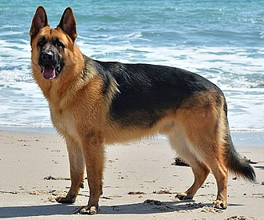

German Shepherd
The German Shepherd [a] or Alsatian is a German breed of working dog of medium to large size. The breed was developed by Max von Stephanitz using various traditional German herding dogs from 1899. It was originally bred as a herding dog, for herding sheep. It has since been used in many other types of work, including disability assistance, search-and-rescue, police work, and warfare. It is commonly kept as a companion dog, and according to the Fédération Cynologique Internationale had the second-highest number of annual registrations in 2013.[2]
History
pts were being made to standardise dog breeds.[3] Dogs were being bred to preserve traits that assisted in their job of herding sheep and protecting their flocks from predators.[4] In Germany this was practised within local communities, where shepherds selected and bred dogs. It was recognised that the breed had the necessary skills for herding sheep, such as intelligence, speed, strength and keen senses of smell.[4] The results were dogs that were able to do such things, but that differed significantly, both in appearance and ability, from one locality to another.[3] To combat these differences, the Phylax Society was formed in 1891 with the intention of creating standardised development plans for native dog breeds in Germany.[4] The society disbanded after only three years due to ongoing internal conflicts regarding the traits in dogs that the society should promote;[4] some members believed dogs should be bred solely for working purposes, while others believed dogs should be bred also for appearance.[5] While unsuccessful in their goal, the Phylax Society had inspired people to pursue standardising dog breeds independently. With the rise of large, industrialised cities in Germany, the predator population began to decline, rendering sheepdogs unnecessary.[4] At the same time, the awareness of sheepdogs as a versatile, intelligent class of canine began to rise.[4] Max von Stephanitz, an ex-cavalry captain and former student of the Berlin Veterinary College, was an ex-member of the Phylax Society who firmly believed dogs should be bred for working.[4] He admired the intelligence, strength and ability of Germany's native sheepdogs, but could not find any one single breed that satisfied him as the perfect working dog.[4]
Description
German Shepherds are medium to large-sized dogs.[24] The breed standard height at the withers is 60–65 cm (24–26 in) for males, and 55–60 cm (22–24 in) for females.[25][26][27] German Shepherds are longer than they are tall, with an ideal proportion of 10 to 8+1⁄2. The AKC official breed standard does not set a standard weight range.[28] They have a domed forehead, a long square-cut muzzle with strong jaws and a black nose. The eyes are medium-sized and brown. The ears are large and stand erect, open at the front and parallel, but they often are pulled back during movement. A German Shepherd has a long neck, which is raised when excited and lowered when moving at a fast pace as well as stalking. The tail is bushy and reaches to the hock.[26] German Shepherds have a double coat which is close and dense with a thick undercoat. The coat is accepted in two variants: medium and long. The gene for long hair is recessive, and therefore the long-haired variety is rarer. Treatment of the long-haired variation differs across standards; it is accepted but does not compete against standard-coated dogs under the German and UK Kennel Clubs while it can compete with standard-coated dogs, but is considered a fault, in the American Kennel Club.[26][28][29] The FCI accepted the long-haired type in 2010, listing it as the variety b, while the short-haired type is listed as the variety a.[30] Most commonly, German Shepherds are either tan/black or red/black. Most colour varieties have black masks and black body markings which can range from a classic "saddle" to an overall "blanket". Rarer colour variations include sable, pure-black, pure-white, liver, silver, blue, and panda varieties. The all-black and sable varieties are acceptable according to most standards; however, the blue and liver are considered to be serious faults and the all-white is grounds for instant disqualification from showing in conformation at All Breed and Specialty Shows.[28]
Intelligence
German Shepherd were bred specifically for their intelligence.[31] In a list of breeds most likely to bark as watchdogs, Stanley Coren ranked the breed in second place.[32] Coupled with their strength, this trait makes the breed desirable as police, guard and search and rescue dogs, as they are able to quickly learn various tasks and interpret instructions better than other breeds.[33]
Temperament
German Shepherds are moderately active dogs and are described in breed standards as self assured.[28] The breed is marked by a willingness to learn and an eagerness to have a purpose. They are curious, which makes them excellent guard dogs and suitable for search missions. They can become overprotective of their family and territory, especially if not socialised correctly.[34] They are not inclined to become immediate friends with strangers.[35] German Shepherds are highly intelligent and obedient, as well as protective of their owners.[36] Aggression and biting Further information: Dog bite prevention A 2020 literature review in Plastic and Reconstructive Surgery found that from 1971 to 2018, of all pure breed dogs in the United States, the German Shepherd was responsible for the most bites severe enough to require hospital treatment.[37] While an Australian report from 1999 provides statistics showing that German Shepherds are the breed third most likely to attack a person in some Australian locales,[38] once their popularity is taken into account, the percentages of attacks by German Shepherds drops to 38th.[39] According to the National Geographic Channel television show Dangerous Encounters, the bite of a German Shepherd has a force of over 1,060 newtons (238 lbf) (compared with that of a Rottweiler, over 1,180–1,460 newtons (265–328 lbf), a Pit bull, 1,050 newtons (235 lbf), a Labrador Retriever, of approximately 1,000 newtons (230 lbf), or a human, of approximately 380 newtons (86 lbf)).[40]